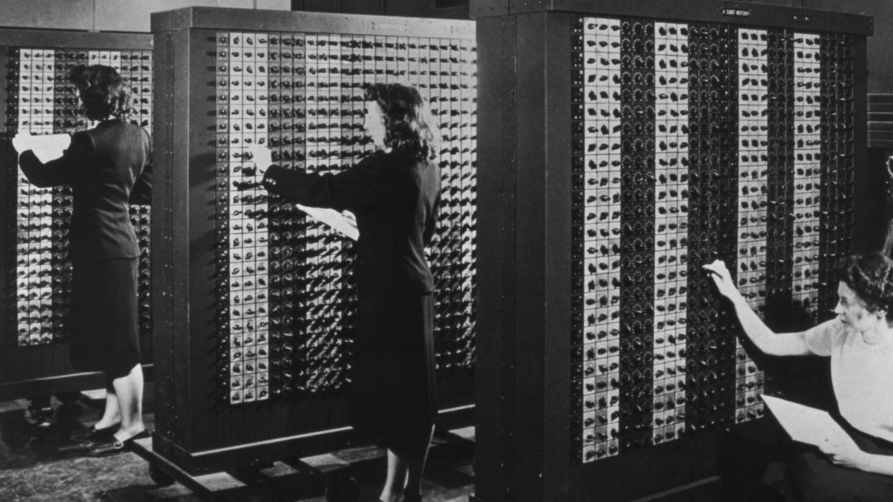

Se crea la primera computadora
El proyecto ENIAC (Computador e Integrador Numérico Electrónico), originalmente conocido como “Proyecto PX”, se diseñó y construyó entre 1943 y 1945 en la escuela Moore, de la Universidad de Pensilvania. En él trabajaron John Mauchly y John Presper Eckert, junto a un equipo de ingenieros que incluía a Robert F.